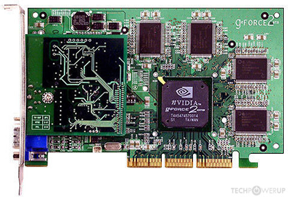
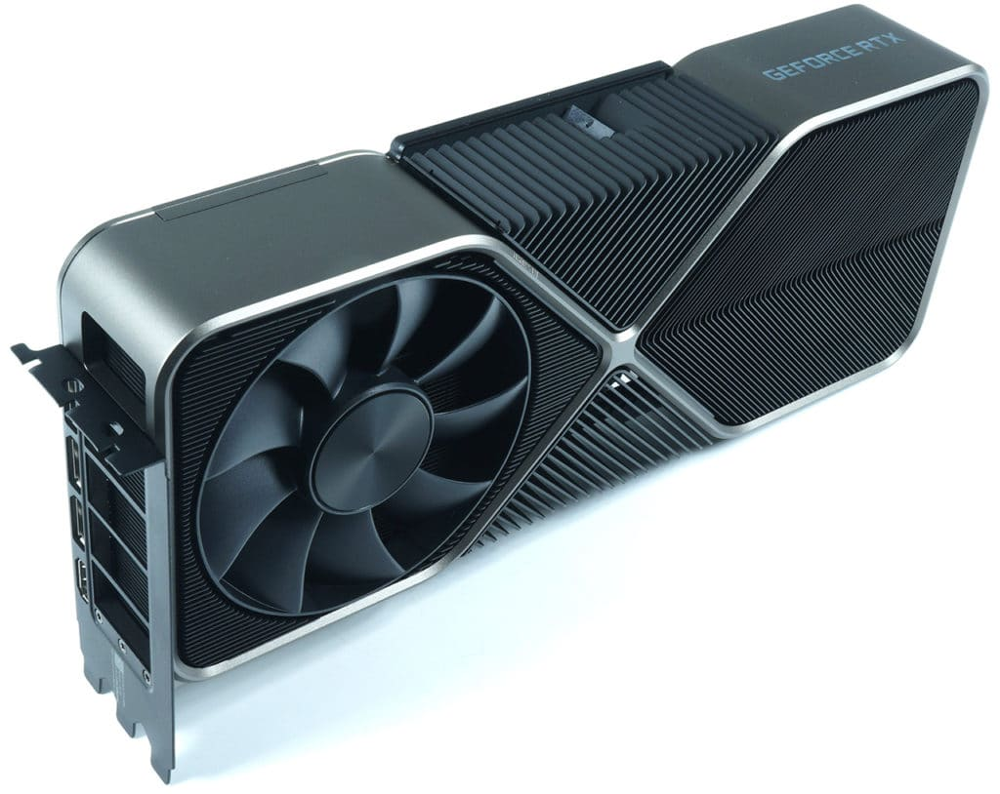

Les processeurs graphique
Sur cette page nous parlerons principalement de NVIDIA, novateur dans de très nombreux aspects du processeur graphique.
La carte grphique ou carte vidéo ou encore processeur graphique dans certains cas, permet l'affichage d'image sur l'écran, elle envoie sur l'écran les images stockées dans sa propre mémoire. La fréquence d'affichage et le format dépendent en partie de l'écran relié à la carte graphique.
Les principales caractéristiques d'une carte graphiques sont la fréquence de la puce, la fréquence de la mémoire vidéo. Pour les exemples en image, seront utilisés mes cartes graphiques sorties par NVIDIA et non par les constructeurs tierce utilisant les composants de bases mais changeant le système de refroisissement par exemple, ou augmentant certains paramètres de la carte graphique pour qu'elle soit plus performante.
| Les cartes graphiques | |
|---|---|
| Ancienne génération | Nouvelle génération |
|  NVIDIA Geforce2 GTS |  NVIDIA RTX 3090 |
|
Les caractéristiques : Fréquence de la puce : 200MHz Fréquence de la mémoire : 166MHz |
Les caractéristiques : Fréquence de la puce : 1395MHz Fréquence de la mémoire : 1219MHz |
|
En conclusion : Nous pouvons constater deux choses sur les processeurs graphiques :
|
|
Mais alors qu'est ce que la technologie RTX ?
La RTX "Ray Tracing eXtreme", est une technique de rendu vidéo, de base utilisée pour les professionels tels que les architectes ou designer. La RTX est capable de calculer les reflets, la lumière en temps réel : quelque chose d'inimaginable il n'y a que quelques années.